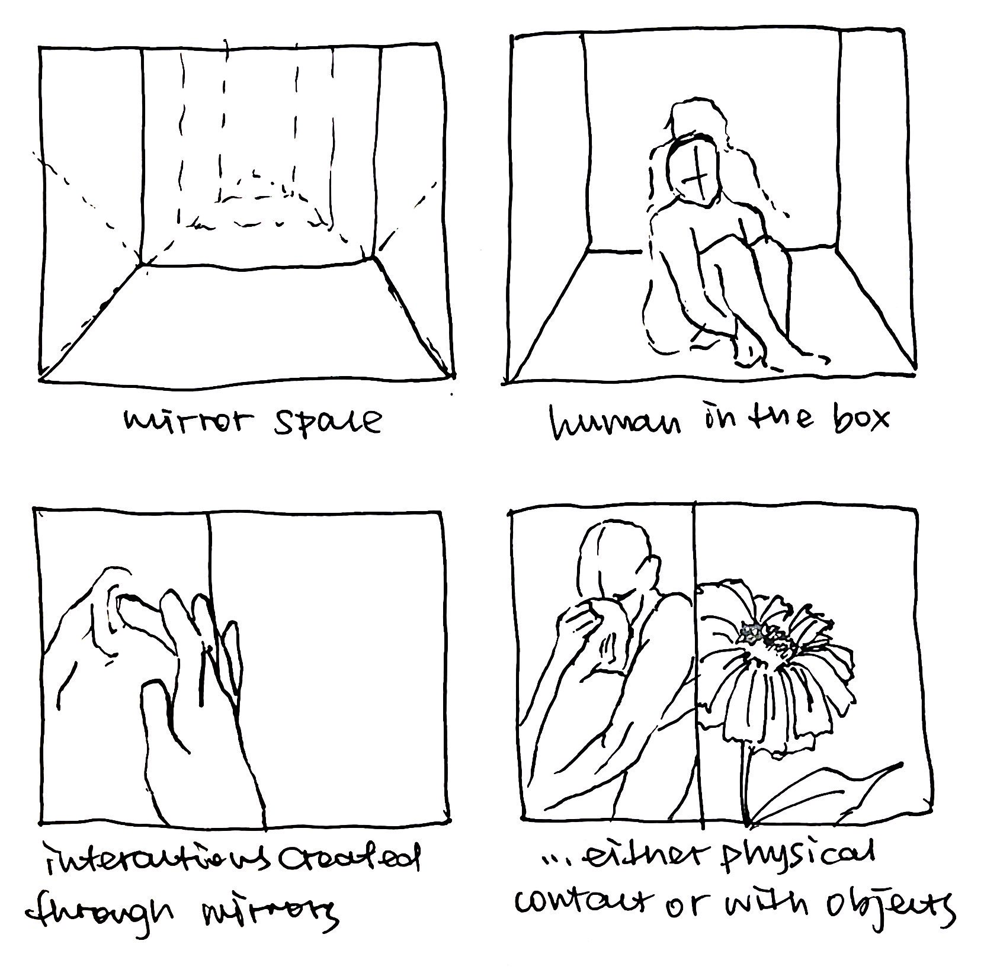
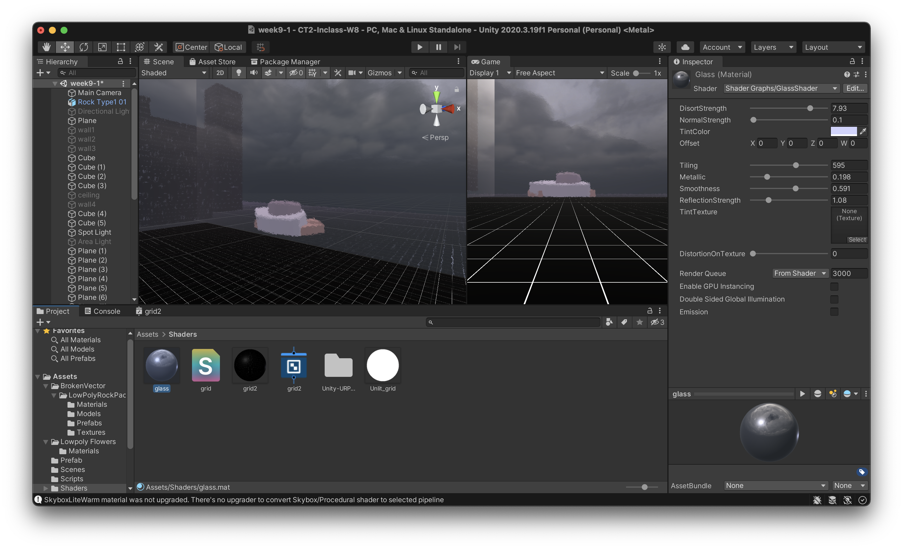
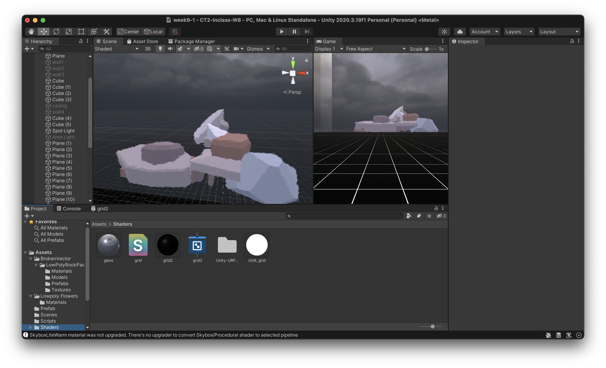
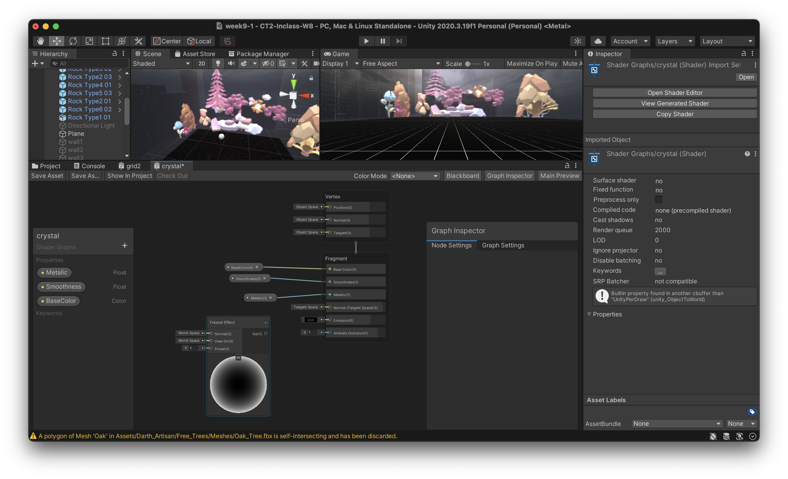
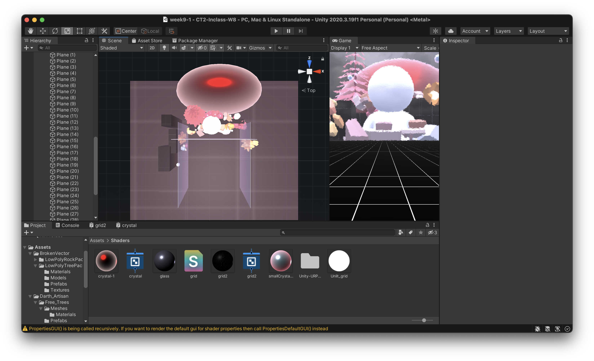
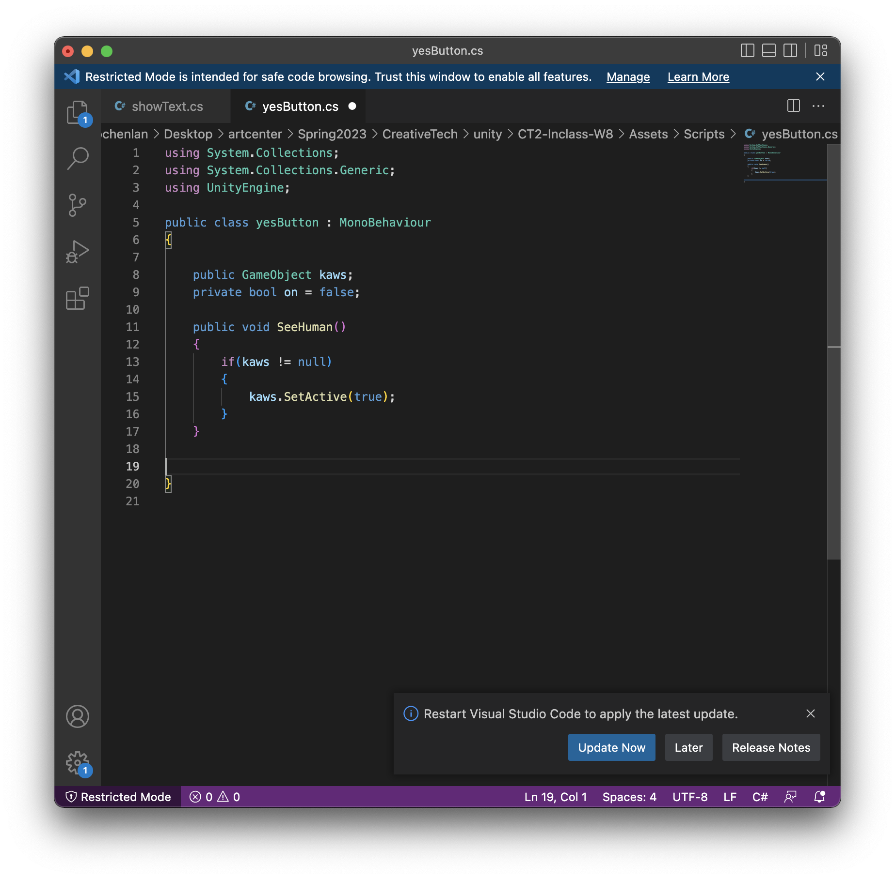
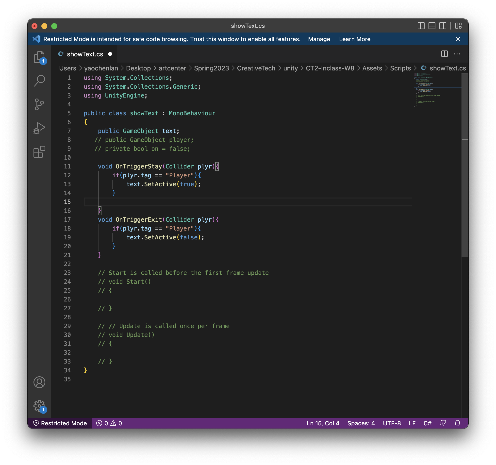

[I felt at last that all our correspondence had been a great illusion, that each of us was only writing to ourselves.]
-André Gide
My dreamed space would be an infinit mirror space. In my dream world, the most authentic communication between people can be established anywhere, anytime: anyone you want to see, hug or kiss, you can see immediately. Thus, the protagonist of such a world is anyone himself, and the mirror is the medium through which all connections are made.
Such world-building, however, is tinged with pessimism. The sense of touch and emotion that seem intimate may be illusory. The creation and communication of emotions, as depicted by Andre Gide, may be no more than a great illusion. The message conveyed through the mirror may be true at one moment, but in the long course of history, it is only an illusion in the mirror.
At the same time, this false connection can also be understood as a momentary reality. Existentialism holds that existence precedes essence. People exist first, and then define themselves through their own choices, and find their essence for themselves. In the infinite mirror world, people get real touch by touching the mirror, whose essence is an infinite extension of self. Along with this interactive process, new selves are constantly being constructed and influencing future selves. Thus, an illusory connection brings absolute reality.
2. Moodboard

3. Sketch 
4. Screen recording for the experience
5. Development
Based on my scene design, I would like my scene to look like crystal but subtle. Therefore, I want to have a blurry aesthetic with some reflection. So I changed the pipeline to the URP to have a better rendering environment for glassy and reflective materials
To build the mirror and glass, I downloaded a GlassShader from Github: https://github.com/omid3098/Unity-URP-GlassShader and to replicate the reflective material
I started to add assets like rocks and plants to make the scene vivid but also like a fairy tale
I also creted a glory crystal sun and made it in the center of the scene as a dominance of the world. I made the texture with shaders
To add the interaction with the people that one might want to see. I downloaded a model representing a human and put it into the scene
For the interaction part, I made a triggered collider over the front glass so that when the player enters the collider, a UI asking if he/she want to see the person in his/her mind would be shown. And after making the choice, he/she can get back and the UI would disappear so that they can have further interactions
 6. Future development
More interactions can be added. For instance, some animations after the character is called can make the scene more vivid. Also, some flowers can be added after a call has been made as a proof of the illusional connection